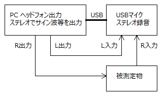
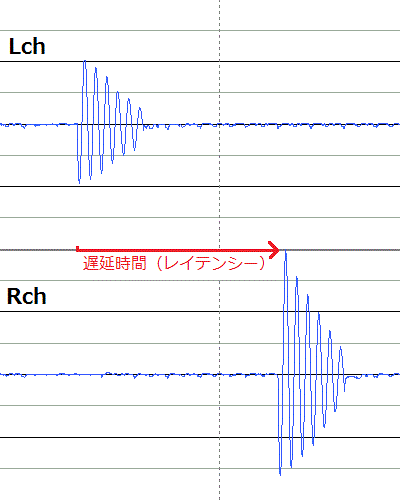

レイテンシーの測定
2017年04月09日 カテゴリー：Raspberry Pi
通常デジタルエフェクターでは、音声処理にかかる時間の分遅延(レイテンシー)が発生します。0.01秒(10ms)以下だとリアルタイム処理と言っていいレベルのようです。なかなかレイテンシーが記載されている記事がありません。買ったはいいものの遅延がひどいというのは避けたいものです。
→レイテンシー比較参考ページ
Pure Dataでレイテンシーを測定する場合はPd\doc\7.stuff\tools\latency.pdのパッチを使うことができます。しかしながらこのパッチで測定した場合、聴感より大きい値になっている気がしたため、別の方法で測定してみました。
図にするまでもありませんが、下図のように直接繋いだ音(Lch)と機器を通した音(Rch)を録音し比較するというものです。

録音したファイルを拡大して見てみると、下図のようにRchの音が遅れます。（音量レベルは特に合わせていません。）

そしてlatency.pdでの測定結果と比べましたが、同じ遅延時間となりました。結局このパッチでレイテンシーを測定して問題ないと思われます。
こちらのサイトでも考察されています→139 not found
Pure Dataの設定を無理に低レイテンシーにすると、出力される音が途切れて雑音が発生します。現在私が製作中のRaspberryPi3エフェクターでは、Delay 5・Block size 64の設定までは雑音が出ず、実際のレイテンシーは12msでした。しかしながら、どの程度重い処理まで可能なのかは未知数です。※後日測定しなおすと、11msでした。
ちなみにZOOM MS-50Gのレイテンシーもついでに測定してみましたが、6個エフェクトをかけても1ms程度でした。本当にメーカーの技術力には圧倒されます……